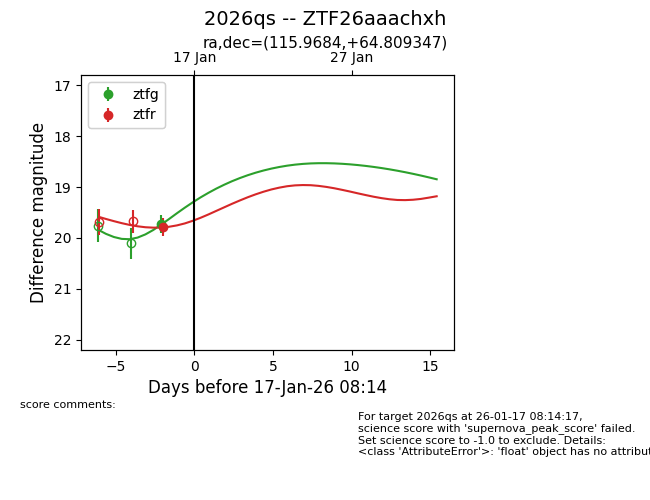
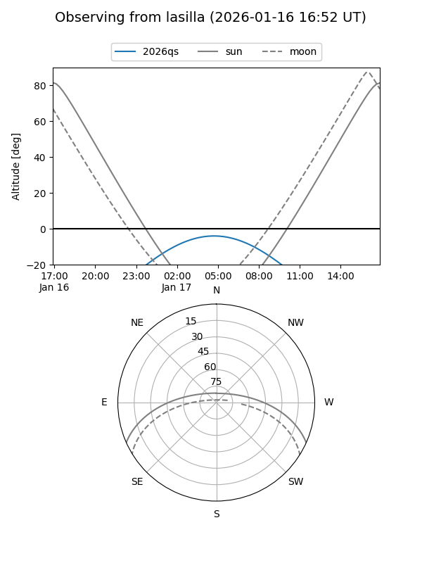
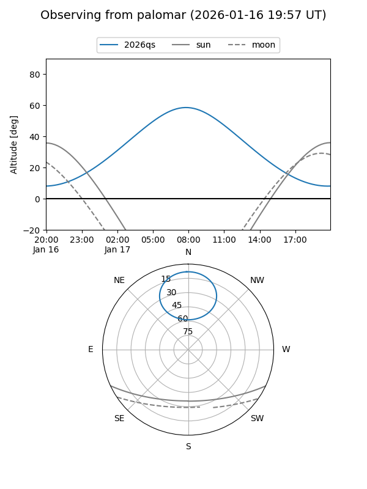
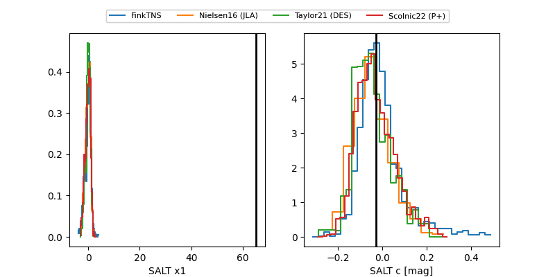

2026qs
Target 2026qs at 2026-01-15 11:20
Aliases and brokers:
FINK: link
Lasair: link
ALeRCE: link
TNS: link
YSE: link
alt names
ZTF26aaachxh (ztf,fink_ztf)
2026qs (tns,yse)
Coordinates:
equatorial (ra, dec) = 115.9684,+64.80935
equatorial (HMS+DMS) = 07:43:52.42,+64:48:33.65
galactic (l, b) = (151.5000,+29.90297)
Flags:
Photometry:
last ztfg=19.72, ztfr=19.79
1 ztfg, 1 ztfr detections
Lightcurve

Visibility


Additional plots
